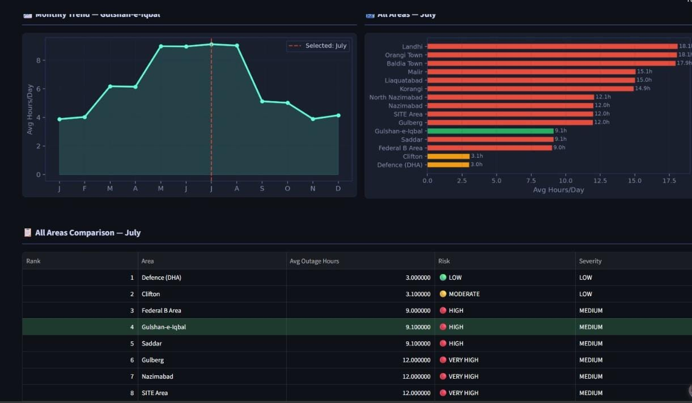
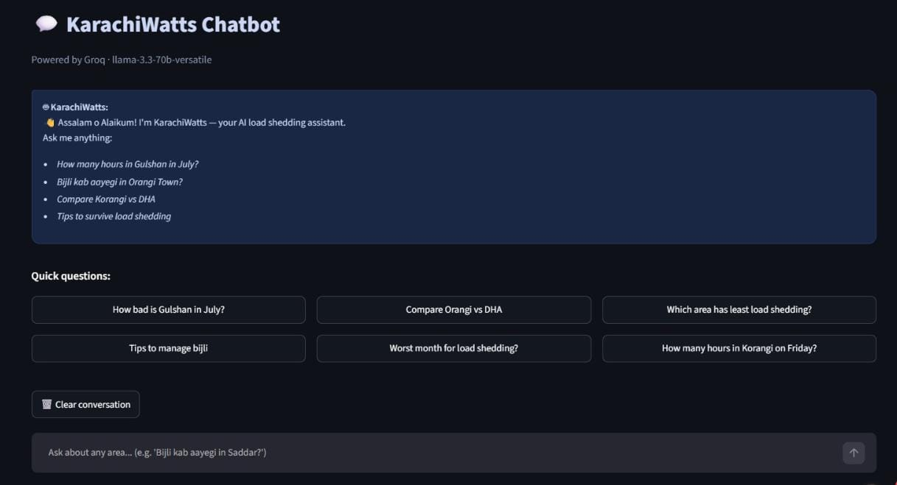

I don't leave machine learning in a notebook – I ship it.
Specialized in building end-to-end machine learning systems. Built for Korangi, Landhi, and high-outage areas.
Featured System
KarachiWatts
Predictive grid outage analysis and interactive assistant.
Someone told me they were tired of outages that hit with no warning. I built a Random Forest model on 16,440 records across 15 areas, then wrapped it in a chatbot that answers "bijli kab aayegi in Korangi?" in plain language — grounded in the model's real prediction, never guessing its own number.


About
I'm an AI/ML undergraduate at Dawood University of Engineering & Technology, Karachi — but the short version is: I don't trust a model until it's been tested outside a notebook, by a real person, on a real problem.
KarachiWatts started because someone was fed up with unpredictable power cuts, not because it made a good class project. That's the pattern I want every future build to follow — a real person, a real problem, an honest accuracy number, even when that number isn't perfect yet.
This page isn't about one project. It's proof of a way of working — future entries here may be in a completely different domain, and that's by design.
Have a real problem like this?
Let's talk about building a version tailored to your business.
Book a Call